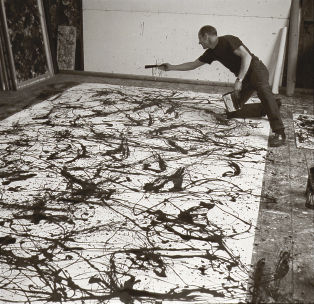

The Creator: Jackson Pollock in a moment of inspiration.
Rudy Burckhardt, photographer. Jackson Pollock and Lee Krasner papers, c.1905–1984. Archives of American Art, Smithsonian Institution. © The Pollock–Krasner Foundation ARS, NY and DACS, London, 2016.